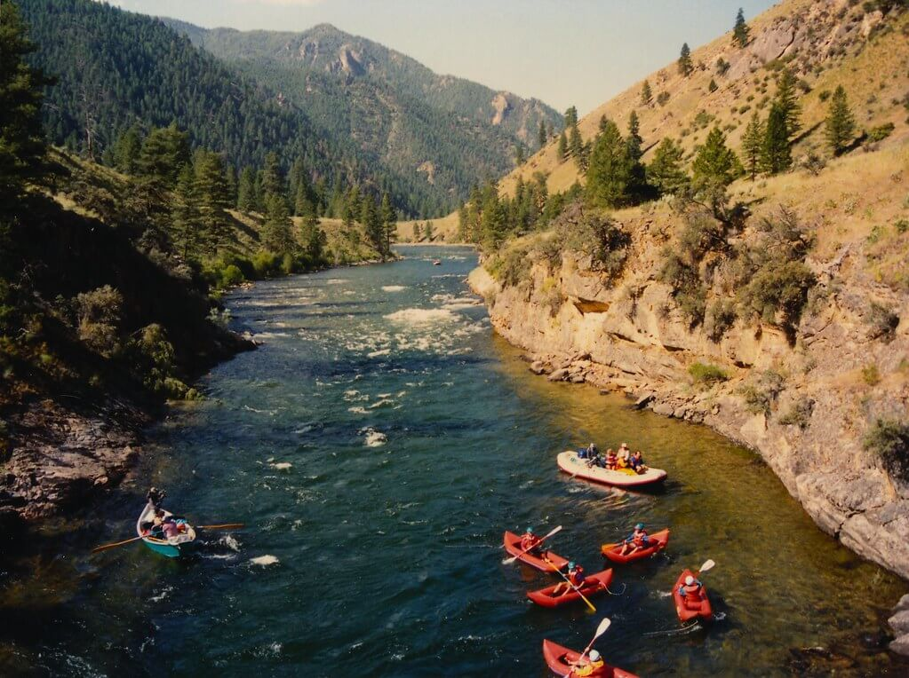
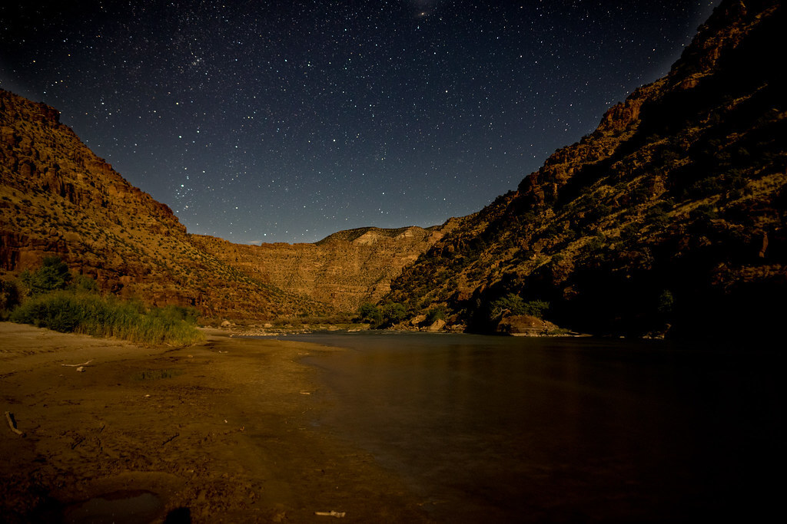
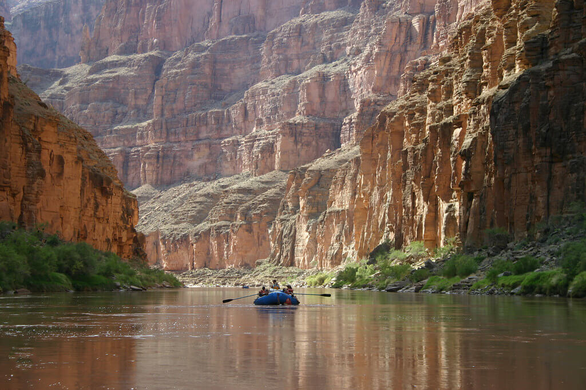

Nestled deep in the Frank Church Wilderness of No Return winds the Salmon river. The Salmon was given the nickname long ago as the River of No Return
by the people living near it because of the number of folks that came to visit and fell so in love with the rugged beauty of the river that they never left.
Herds of elk and deer graze on the hillsides around the river and bear and bighorn sheep are also commonly sighted. The river corridor is also
lined with awe inspiring ponderosa pine which tower over the sandy beaches in the cmapsites and provide shelter from sun or rain when needed.
Let's not forget the rapids! They range from clas I-IV. The Salmon is one of the longest undammed rivers in the United States. As a free flowing river the water is
higher, faster, and colder in the early summer...but families with children who like to swim tend to appreciate the late summer's slower, warmer water more.

